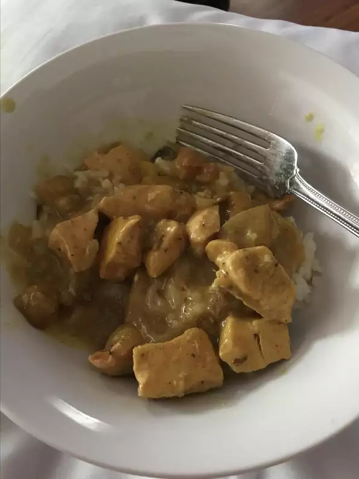

Curried Chicken Recipe

Description
A very easy and delicious chicken recipe that goes well served with rice.
Ingredients
- 1 whole chicken, cut into 8 pieces and skin removed
- salt and ground black pepper to taste
- 1 tablespoon paprika, or to taste
- 1 tablespoon butter
- 1 apple, cored and chopped
- 1 onion, chopped
- 1 tablespoon curry powder, or more to taste
- 1 (10.75 ounce) can cream of mushroom soup
- 1 cup half-and-half cream
Steps
- Preheat an oven to 350 degrees F (175 degrees C).
- Arrange the chicken pieces in a single layer in a 9x13-inch baking dish. Season the chicken liberally with salt, pepper, and the paprika; set aside.
- Melt the butter in a skillet over medium heat. Add the apple and onion to the melted butter, season with the curry powder, and cook and stir until the apple and onion are tender, 7 to 10 minutes. Stir the mushroom soup and half-and-half into the mixture until completely combined; spoon over the chicken pieces.
- Bake in the preheated oven until no longer pink at the bone and the juices run clear, about 75 minutes. An instant-read thermometer inserted into the thickest part of the thigh, near the bone should read 180 degrees F (82 degrees C).